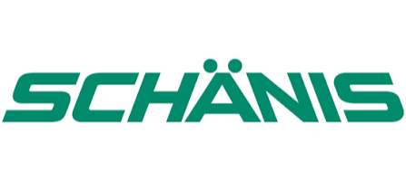

Eine Plattform, die Ihr KMU besser und schneller macht.
Ideen, Massnahmen, Kennzahlen und Audits liegen heute verstreut in Excel, E-Mail, SharePoint und auf Papier. Siato führt Ihr Lean Management in einem System zusammen, direkt in Microsoft 365. Aus guten Absichten werden verbindliche Prozesse.
fliessen
Warum Siato
Seit über 15 Jahren bewährt. Jetzt in Microsoft 365.
Siato ist die Version der allDates-Software, die auf der Microsoft Power Platform läuft. Die Software ist seit über 15 Jahren in Schweizer KMU im Einsatz, über 80 Betriebe arbeiten damit. Was sich dort bewährt hat, steckt auch in Siato.
Schweizer Datenhoheit
In der Schweiz entwickelt. Ihre Daten bleiben hier, DSGVO- und ISO-konform.
Mitten in Microsoft 365
Gebaut auf der Microsoft Power Platform. Ihre Leute arbeiten in Teams, Outlook und SharePoint, also dort, wo sie sich schon auskennen.
Faire KMU-Preise
Schon ab CHF X.– pro Benutzer. Sie zahlen nur die Module, die Sie brauchen.
Erweiterbar & zukunftssicher
Was in kein Modul passt, bilden wir als Custom-Modul ab, auf derselben Plattform.
Woran es hängt
9 Gründe, warum Lean Management ohne Plattform scheitert
Lean scheitert selten an der Methode, meist an der Umsetzung. Schulung gemacht, Plakate aufgehängt, und ein paar Monate später ist alles wie vorher.
- 1
Papier und Excel halten nicht
Eine Massnahme auf der Excel-Liste verschwindet in der Schublade. Wer dran ist und ob sie je erledigt wurde, weiss bald niemand mehr.
Bei jeder Massnahme steht, wer sie erledigt und bis wann. Wird sie überfällig, sehen Sie es sofort.
- 2
Führung kann nicht überall sein
Sie können nicht jeden Tag durch jede Abteilung gehen. Was überfällig ist, erfahren Sie erst, wenn es brennt.
Am Montagmorgen sehen Sie die Aufgaben Ihres ganzen Teams und was davon überfällig ist.
- 3
Beim Audit wird es eng
ISO 9001 und die Vorschriften Ihrer Branche verlangen lückenlose Nachweise. Ohne System wird die Woche vor dem Audit zur Nachtschicht.
Arbeitsanweisungen liegen versioniert und freigegeben in Siato. Fragt der Auditor nach der gültigen Fassung, ist sie schon da.
besser
Module
Alles drin, was Lean braucht.
Fünf Module, von der ersten Idee bis zum bestandenen Audit. Jedes hilft für sich, zusammen geben sie den Überblick.
Transparenz & Konsequenz
Nach dem Anmelden erscheinen zuerst die eigenen Aufgaben und Termine. Führungskräfte sehen dasselbe für ihr Team und merken früh, wo etwas liegen bleibt.
- Mein persönliches Cockpit
- Alle meine Aufgaben
- Aufgaben aus Sicht der Führung
Verbesserung & KVP
Ideen aus der Belegschaft werden bewertet und freigegeben. Verbesserungsprojekte laufen im PDCA-Zyklus, und Verschwendung halten Sie beim Rundgang am Tablet fest.
- Ideenmanagement
- PDCA-Zyklen
- Waste Walks
Qualität & Abweichungen
Reklamationen von Kunden, Probleme mit Lieferanten und Fehler aus der eigenen Produktion laufen über denselben Weg. Jeder Schritt ist dokumentiert, bis die Ursache beseitigt ist.
- Kundenbeanstandungen
- Lieferantenbeanstandungen
- Interne Abweichungen
- 8D-Report
Audits & Compliance
Wer eine Arbeitsanweisung öffnet, hat die gültige vor sich, nicht die vom letzten Jahr. Die Prozesslandkarte zeigt, wie Ihre Abläufe zusammenhängen.
- Gelenkte Dokumente
- Prozesslandkarte
Kommunikation & Abstimmung
Die tägliche Shopfloor-Runde läuft direkt am Board, die Sitzungen aller Gremien stehen im Kalender. Was nicht warten kann, entscheiden Sie per Zirkularbeschluss.
- Besprechungen
- Shopfloor
- Zirkularbeschlüsse
Custom-Modul
Passt ein Ablauf in keines der fünf Module, bekommt er sein eigenes. Ein Custom-Modul bildet einen oder mehrere beliebige Prozesse aus Ihrem Betrieb ab, auf derselben Plattform.
- Eigene Prozesse
- Excel-Listen ablösen
Dazu kommt ein Systemmodul, welches Siato mit M365 verbindet.
überall
Überall einsatzbereit
Desktop, Tablet, Smartphone: Siato ist überall dabei.
Verbesserung passiert nicht am Schreibtisch allein. Siato läuft im Browser und als App auf jedem Gerät. Gebaut ist es für Desktop und Tablet: Dort hat Ihr Team den vollen Funktionsumfang, im Büro wie am Shopfloor-Terminal. Unterwegs reicht das Smartphone für Kennzahlen und Aufgaben.
Verbesserung & KVP
Aus Ideen werden messbare Resultate
Jedes Verbesserungsprojekt läuft nach PDCA: planen, umsetzen, prüfen, verankern. In jeder Phase steht, wer dran ist und wie weit es ist. Was es gebracht hat, sehen Sie am Ende schwarz auf weiss.
- Ideenmanagement: vom Einfall bis zur Freigabe
- PDCA-Zyklen: jede Phase dokumentiert und nachverfolgt
- Waste Walks: Verschwendung beim Rundgang am Tablet erfassen
Kommunikation & Abstimmung
Alle Sitzungen, ein Kalender
Von der Shopfloor-Runde bis zur Geschäftsleitung sieht jedes Gremium im selben Kalender, wann es tagt.
- Besprechungen: jedes Gremium mit seinen Terminen
- Shopfloor: die tägliche Runde direkt am Board, ohne Papier
- Zirkularbeschlüsse: entscheiden, ohne eine Sitzung einzuberufen
Qualität & Abweichungen
Fehler an der Wurzel packen
Ob Reklamation oder eigener Fehler: Jeder Fall durchläuft Sofortmassnahme, Ursachenanalyse und Korrektur. Fragt der Kunde ein Jahr später nach, steht die ganze Geschichte da.
- Kundenbeanstandungen mit vollständiger Kommunikationshistorie
- Interne Abweichungen: erkannt, bevor sie beim Kunden ankommen
- 8D-Report: in acht Schritten vom Problem bis zur Wirksamkeitsprüfung
Referenzen
Diese Betriebe arbeiten mit der Software von allDates.

«Vorher lagen unsere Massnahmen in vier Excel-Listen, und niemand wusste, welche die aktuelle ist. Heute sehe ich in zwei Minuten, wo wir stehen.»
«Das Beste ist, dass niemand ein ganz neues Programm lernen musste. Siato läuft in unserem Microsoft 365. Die Leute in der Halle erfassen ihre Ideen am Tablet, und jede landet bei jemandem, der sie bewertet.»
«Vor dem letzten Audit hat niemand eine Nacht durchgearbeitet. Was der Auditor sehen wollte, war da, mit Datum und Namen.»
fair
Preise
Sie zahlen nur, was Sie nutzen
Sie starten mit den Modulen, die Sie heute brauchen, und nehmen weitere dazu, wenn Ihr Betrieb so weit ist.
Start
Für KMU, die mit einem einzelnen Thema anfangen wollen.
- Einzelne Module frei wählbar
- Zusätzlich pro Benutzer eine Lizenz «Power Apps per App»
- Microsoft-365-Integration
- Im Browser und als App
Professional
Für Betriebe, die mehrere Module zusammen einsetzen.
- Mehrere Module im Paket
- Paketpreis auf Anfrage
- Eine Aufgabenliste über alle Module
- Zusätzlich pro Benutzer eine Lizenz «Power Apps per App»
Custom
Für Abläufe, die in kein Modul passen, gebaut auf der Power Platform.
- Ein oder mehrere eigene Prozesse
- Dieselbe Datenbank wie die Module
- Excel-Listen ablösen
- Volle Power-Platform-Funktionalität
Dazu braucht jeder Benutzer eine Lizenz «Power Apps per App» von Microsoft. Was sie kostet, hängt von Ihrem Microsoft-Partner (CSP) ab. Siato-Preise exkl. MwSt.
Häufige Fragen
Das fragen KMU vor dem Start.
Ihre Frage ist nicht dabei? Rufen Sie Christoph Gantner oder Remo Semm an, das geht schneller als jedes Formular.
Demo buchen
Sehen Sie sich Siato in 30 Minuten an
Denken Sie an die Excel-Liste, die keiner mehr anfassen will. In der unverbindlichen Demo sehen Sie, wie dieselbe Arbeit in Siato aussieht.